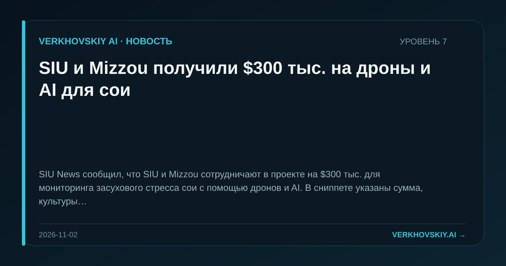

SIU и Mizzou получили $300 тыс. на дроны и AI для сои
SIU News сообщил, что SIU и Mizzou сотрудничают в проекте на $300 тыс. для мониторинга засухового стресса сои с помощью дронов и AI. В сниппете указаны сумма, культуры и используемые технологии.